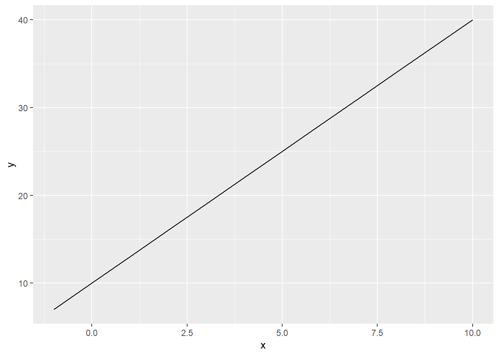
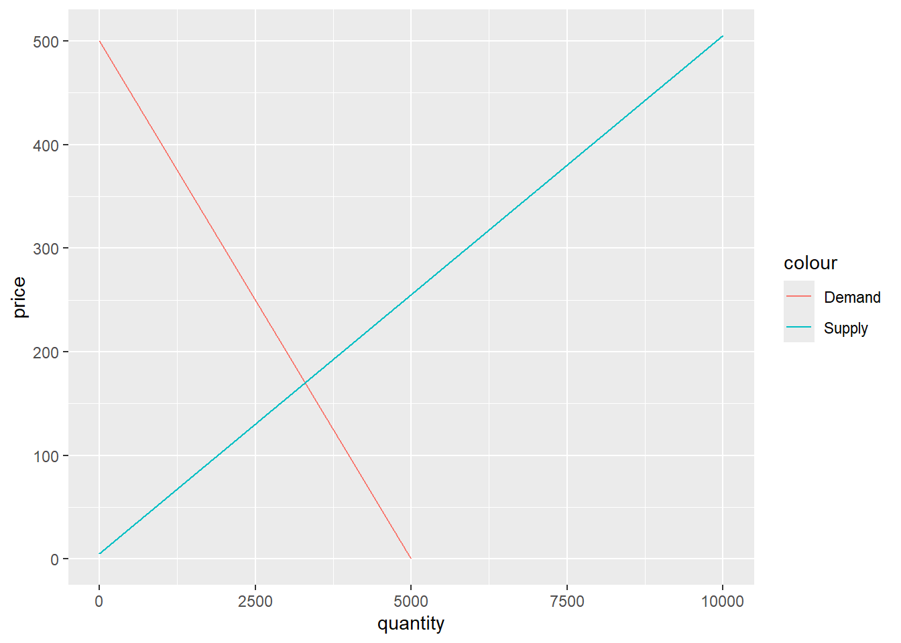
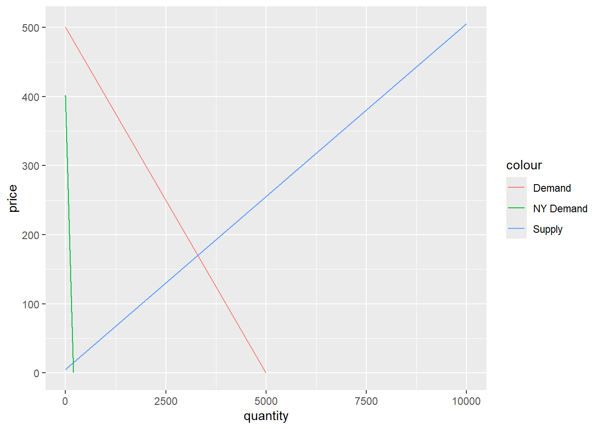
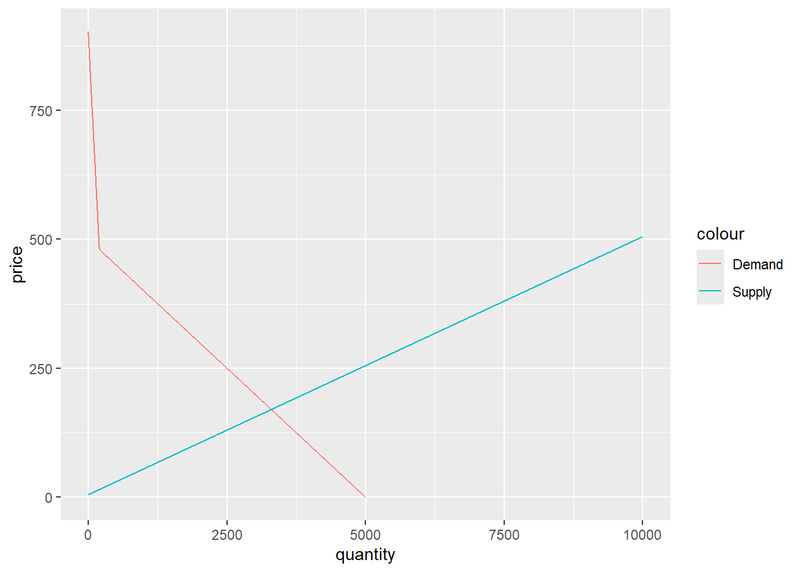

Code
library(tidyverse)
library(janitor)
library(here)
library(pracma)Quarto libraries
library(tidyverse)
library(janitor)
library(here)
library(pracma)1a,1b
z <- seq(1,10, by=0.5)
z [1] 1.0 1.5 2.0 2.5 3.0 3.5 4.0 4.5 5.0 5.5 6.0 6.5 7.0 7.5 8.0
[16] 8.5 9.0 9.5 10.0liney <- function(a,x,b){
y <- (a*x+b)
return(y)
}
liney(3,5,10)[1] 251c
df <- data.frame(x = seq(-1,10))
a<-3
b<-10
df$a <- a
df$b <- b
df$y <- df$a*df$x+df$b
df x a b y
1 -1 3 10 7
2 0 3 10 10
3 1 3 10 13
4 2 3 10 16
5 3 3 10 19
6 4 3 10 22
7 5 3 10 25
8 6 3 10 28
9 7 3 10 31
10 8 3 10 34
11 9 3 10 37
12 10 3 10 401d
ggplot(data=df, aes(x=x, y=y))+geom_line()
1e
rm(list = ls(all = TRUE))
a <- -2
b <- 100
s <- 3
d <- 0
func1 <- function(a,b,X){
Y=a*X+b
return(Y)
}
func2 <- function(s,d,X){
Y=s*X+d
return(Y)
}
func3 <- function(x,s,a,b,d){
Z = func1(a,b,x) - func2(s,d,x)
return(Z)
}
rooty_1 <- fzero(func3, a = -2,
b = 100, s = 3, d = 0, c(-100, 100))
rooty_1$x[1] 20the_fore_told_Y_value_at_x_20 <- func1(-2,100,20)
the_fore_told_Y_value_at_x_20[1] 602
pnut_demand <- function(q){
p=500-0.1*q
return(p)
}
pnut_supply <- function(q){
p=5+0.05*q
return(p)
}
eq_pnut <- function(q){
z=pnut_demand(q)-pnut_supply(q)
return(z)
}
qstar <- fzero(eq_pnut, c(-100,10000))$x
price_pnut <- pnut_demand(3300)
qstar[1] 3300price_pnut[1] 1702a: equilibrium price will be at 170 credits at quantity of 3300 jars
dq_val <- seq(-1,5000, by=1)
dp_val <- 500-0.1*dq_val
demand_pnut <- data.frame(x=dq_val, y=dp_val)
sq_val <- seq(-1,10000)
sp_val <- 5+0.05*sq_val
supply_pnut <- data.frame(x=sq_val, y=sp_val)
ggplot() + geom_line(data=demand_pnut, aes(x=x, y=y, color="Demand")) + geom_line(data=supply_pnut, aes(x=x,y=y, color="Supply")) +labs(x="quantity", y= "price")
2b Benefit
supply_benefit <- (qstar*price_pnut)/2
supply_benefit[1] 280500demand_benefit <- (3300*(500-170))/2
demand_benefit [1] 5445002c New New York Large Food Bank
dnyq_val <- seq(-1,200, by=1)
dnyp_val <- 400-2*dnyq_val
ny_demand <- data.frame(x=dnyq_val, y=dnyp_val)
ggplot() + geom_line(data=demand_pnut, aes(x=x, y=y, color="Demand")) + geom_line(data=supply_pnut, aes(x=x,y=y, color="Supply")) + geom_line(data=ny_demand, aes(x=x,y=y, color="NY Demand")) +labs(x="quantity", y= "price")
2c
agq_val <- seq(-1,200)
agp_val <- 900-2.1*agq_val
ag_demand <- data.frame(x=agq_val, y=agp_val)
final_dq_val <- seq(200,5000, by=1)
final_dp_val <- 500-0.1*final_dq_val
final_ag_demand <- data.frame(x=final_dq_val, y=final_dp_val)
ggplot() + geom_line(data=final_ag_demand, aes(x=x, y=y, color="Demand")) + geom_line(data=ag_demand, aes(x=x, y=y, color="Demand")) + geom_line(data=supply_pnut, aes(x=x,y=y, color="Supply")) + labs(x="quantity", y= "price")
2c The new NY Food Bank does not effect the equilibrium price. The equilibrium price remains at 170 credits.
2d If trading jars of peanut butter generates carbon emissions than these emissions should be incorporated into the cost of the trade. Would this mean that the carbon emissions would not become an “externality?”
3a used car market supply p=200+0.2*q^1.2
rm(list = ls(all = TRUE))
quantity <- seq(0,2000)
p <- 2000
CA_price <- data.frame(x=quantity, y=p)
quantity1 <- seq(0,2000)
p1 <- 200+0.2*(quantity1^1.2)
ucar_sup <- data.frame(x=quantity1, y= p1)
CA_purchase <- function(q){
return(2000)
}
sup <- function(q) {
p=200+0.2*(q^1.2)
return(p)
}
equ <- function(q) {
z=sup(q)-CA_purchase(q)
return(z)
}
quantity_cars <- fzero(equ, c(0,3000))$x
quantity_cars[1] 1973.3413a i.1973 cars will be bought by the state given this supply curve
Elasticity of supply at equilibrium e=(dP/dQ)(P/Q), e=(.241973^.2)*(2000/1973)= 1.109
Benefits are unclear for owners of old cars because old does not mean that it is worth less than $2000. If a car is worth more than 2000 dollars than it would not be beneficial for owners to sell back to the state. But if the old car is worth less than 2000 than it would stand to reason that these cars would come out of the woodwork and off the road. This policy may also supply more money to the used car market, because owners of older cars may be priced out of the new car market and they may take their rebate back into the used car market driving prices up for older cars further limiting the amount of cars available to the state at the price of 2000.
Under current conditions the cost to the state would be 1973*2000= $3,946,000
3b.
MB <- function(q) {
p=1000-0.1*q^1.2
return(p)
}
social_equ <- function(q) {
z=sup(q)-MB(q)
return(z)
}
social_benefit <- fzero(social_equ, c(0,6000))$x
social_benefit[1] 716.1004MB(716)[1] 733.3782sup(716)[1] 733.24363b i. The socially optimal number of cars to remove would be 716.